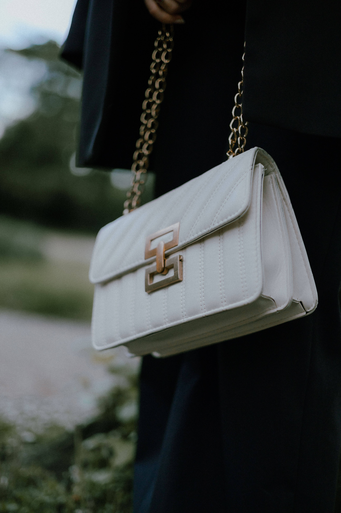
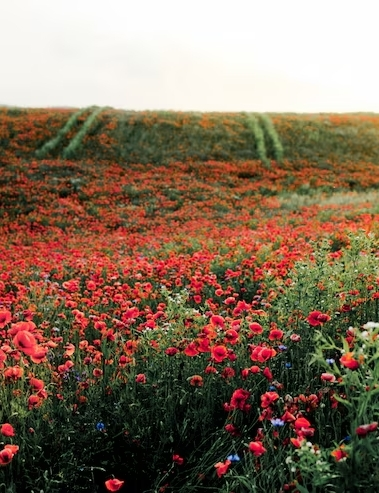
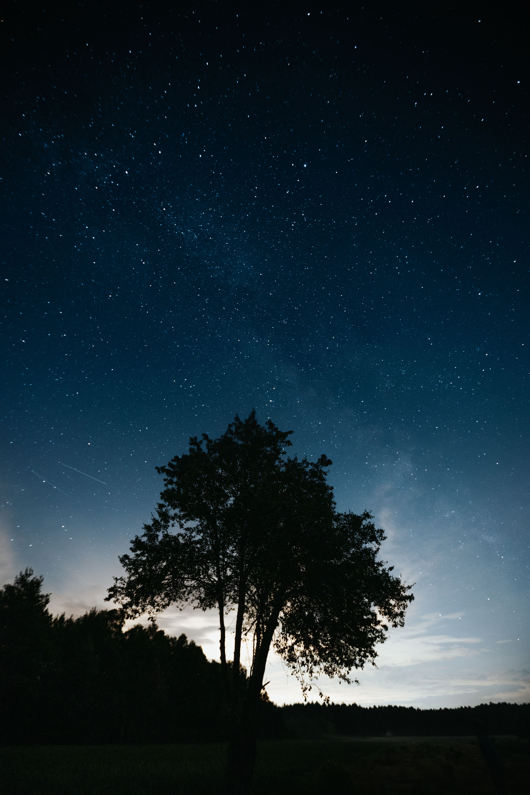
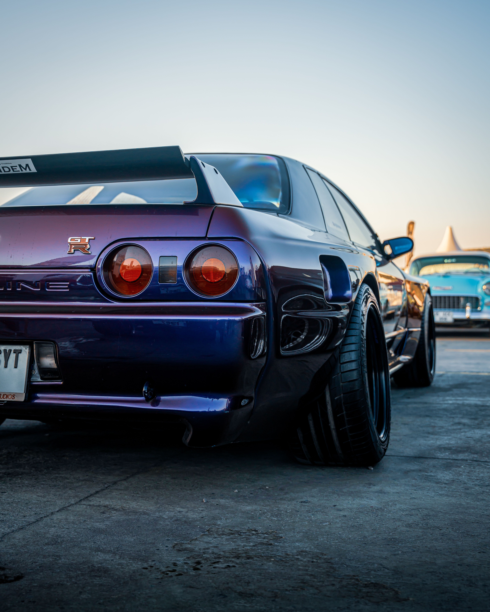
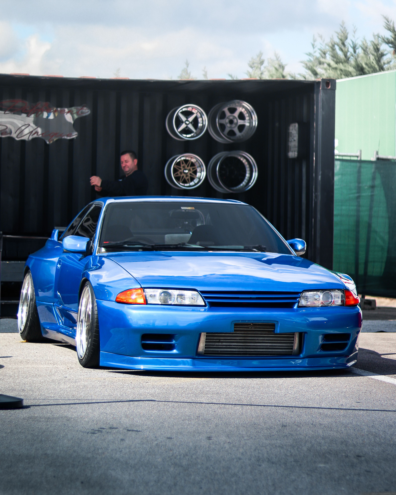
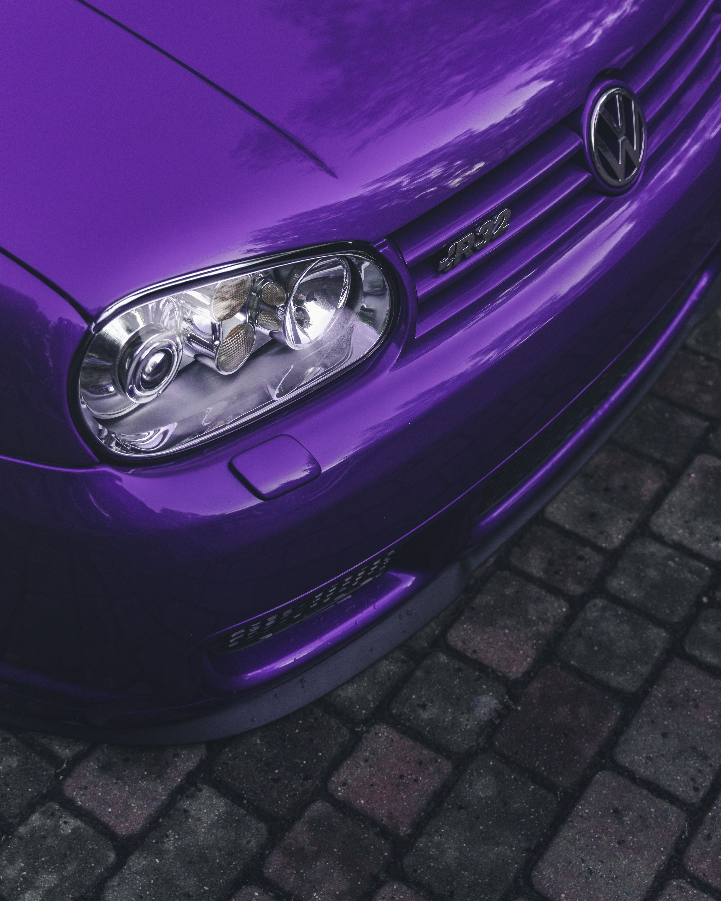
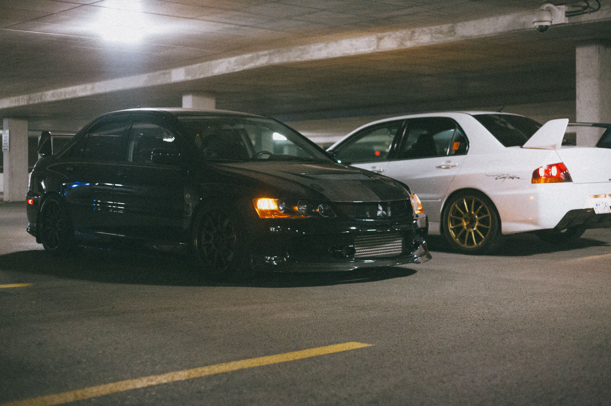
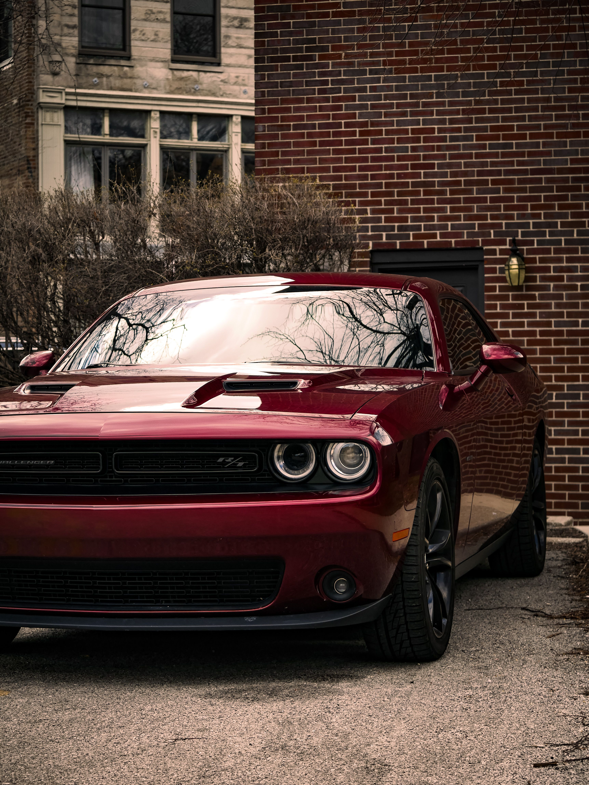

Câmera
Buscar
Sugestões IA
Favoritos
Álbuns
Lixeira
Galeria Inteligente
Organizar Melhores Fotos
Sugerir Melhor Resolução
Melhorar Luz e Nitidez
Todos
Full HD
1080p
2k
1440p
4k
2160p
8k
4320p
IA ORGANIZOU 9 FOTOS
Separado por Qualidade
MELHORES FOTOS
Ver Todas
8K

8K

4K

4K

4K

2K

4K

2K

FHD
FOTOS DE ALTA QUALIDADE
6 fotos em 4K ou superior
Câmera
Buscar
Favoritos
Álbuns
Visualizar
Sugerir Melhor Resolução
Melhorar Luz e Nitidez
Restaurar
Excluir